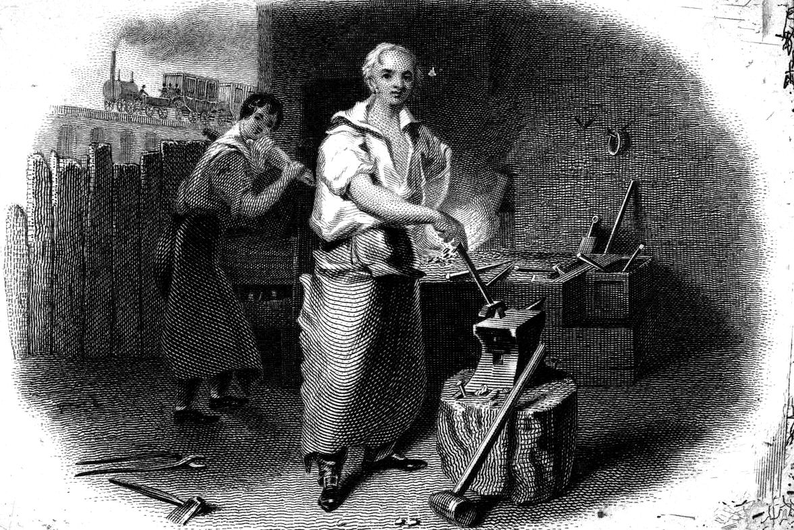

Point at a token to see its id.
tiktoken's speed on one thread, on Wikipedia, novels in four languages, a Chinese novel and six non-Latin scripts. On GPT-4o's vocabulary it is a little slower on three of the four.
Measured against tiktoken
tiktoken's speed in batches on six cores, same inputs.
on small, repetitive text, where the word cache answers most words. That is the best case.
Every measured case
Median of five runs of the PyPI package on a 6-core Linux server, one thread, on public text. All three libraries load the same vocabulary, and the benchmark refuses to run unless they return identical ids for every input.
MB of UTF-8 input per second, one thread. Longer is faster.

A forge works raw metal into parts of a known shape. A tokenizer does the same to text.
Banknote vignette with a blacksmith and forge, Asher Brown Durand, about 1830. The Metropolitan Museum of Art, public domain.From bytes to tokens
Byte-pair encoding starts from single bytes and keeps merging the neighbouring pair with the lowest rank in the vocabulary's merge list, until no pair is left to merge. What remains are the tokens.
tokforge does this in Rust without a regex engine: a hand-written pre-tokenizer splits text into words, a sharded cache answers words it has seen, and the merges run on raw bytes in the same order as the reference.
Checked against the originals
Speed is only worth having if the ids are right. Every result is compared with the implementation it imitates.
Golden ids for GPT-2, GPT-4 and GPT-4o on 15 hard corpus files match exactly.
Differential inputs run against Hugging Face tokenizers across four vocabularies. Zero mismatches.
Independent goldens for XLM-R, with every divergence written down.
Google's original BERT tokenizer as the oracle for WordPiece.
Treated as plain text by default, so a prompt can never smuggle in an end-of-text id.
Every response names the exact tokenizer file it used.
One line to install
pip install tokforge
Wheels for Linux, macOS and Windows, Python 3.9 and later. No Rust toolchain needed.
- Any Hugging Face
tokenizer.jsonloads; GPT-style vocabularies run on the fast core. - Batches release the GIL and use every core.
- Also a CLI, an HTTP server and a streaming JSONL pipeline.
# same ids as tiktoken.get_encoding("o200k_base")
import tokforge
tok = tokforge.Tokenizer.from_file("o200k_base.tokenizer.json")
tok.encode("Hello from Lahore") # [13225, 591, 158256]
tok.count("Hello from Lahore") # 3
tok.encode_batch(docs) # every core, GIL released
tok.chunk(report, max_tokens=512) # slices that join back exactly